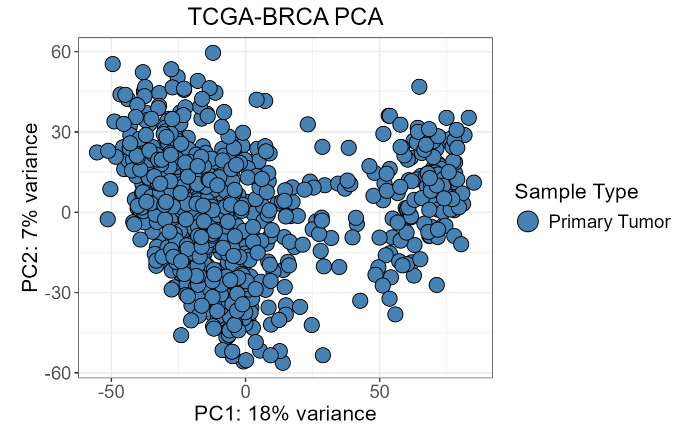

Function to make nice PCA plots
nice_PCA.RdThis was inspired on the plotPCA function from DESeq2, made by Wolfgang Huber But including some improvements made by David Requena. Now it allows:
To choose which PCs to plot.
To use one or two features to represent as the fill or shape of the markers.
To provide the colors, shapes and fonts.
Usage
nice_PCA(
object,
annotations = NULL,
PCs = c(1, 2),
ntop = NULL,
variables = c(fill = "VarFill", shape = "VarShape"),
legend_names = c(fill = "Sample Type", shape = "Library"),
size = 5,
alpha = 1,
colors = NULL,
shapes = NULL,
title = NULL,
legend_title = 16,
legend_elements = 14,
legend_pos = NULL,
labels = NULL,
name_tags = NULL,
cluster_data = FALSE,
scale = FALSE,
n_clusters = 3,
transform = FALSE,
outPCs = 50,
returnData = FALSE
)Arguments
- object
A matrix of counts with genes as rows and sample ids as columns.
- annotations
A data frame of annotation, including sample ids and variables to plot. Default: NULL.
- PCs
A vector indicating the two Principal Components to plot. Default: c(1,2).
- ntop
Number of top genes to use for principal components, selected by highest row variance. Default: NULL.
- variables
To indicate the variables to be used as Shape and Fill of the markers.
- legend_names
The names to be used for the legend of the Shape and Fill.
- size
Size of the marker. Default: 5.
- alpha
Transparency of the marker, which goes from 0 (transparent) to 1 (no transparent). Default: 1.
- colors
Vector of colors to be used for the categories of the variable assigned as Marker Fill.
- shapes
Vector of shapes to be used for the categories of the variable assigned as Marker Shape.
- title
Plot title. Default: NULL.
- legend_title
Font of the legend title. Default: 16.
- legend_elements
Font of the elements of the legend Default: 14.
- legend_pos
Position of the legend inside the plot. Example: c(0.80, 0.80). Default: NULL.
- labels
A vector containing the variable to be used as labels (name inside the marker), and the label size. Example: c(var = "patient", size = 2). Default: NULL (no labels).
A vector containing the variable to be used as name tags (name outside the marker), tag size, minimum distance in order to add an arrow connecting the tag and the marker, and minimum distance from the tag and the center of the marker. Example: c(var = "label", size = 3, minlen = 2, box = 0.5). Default: NULL (no name tags).
- cluster_data
Indicates if the function generates the clusters (TRUE) or not (FALSE). This new cluster variable can be used as fill or shape. Default: FALSE.
- scale
Logical. Indicates whether to scale the data to have unit variances or not. Default: FALSE.
- n_clusters
Number of cluster categories. Default: 3.
- transform
Logical. Indicates whether to log2 transform the input
objector not. Default: FALSE.- outPCs
Number of Principal Components to keep if
returnDatais TRUE. Default: 50.- returnData
Indicates if the function should return the data (TRUE) or the plot (FALSE). Default: FALSE.
Value
A ggplot2 object if returnData = FALSE (default). If
returnData = TRUE, a numeric matrix of PCA coordinates with dimensions
samples × outPCs, with a percentVar attribute containing the
proportion of variance explained per component.
See also
nice_UMAP(), nice_tSNE() for other alternatives;
brca_rna_vst_or_logexpr_small for the recommended input matrix.
Examples
data(brca_rna_vst_or_logexpr_small)
data(brca_rna_metadata_tumor_normal)
# nice_PCA joins by a column named "id" in annotations
sampledata_pca <- brca_rna_metadata_tumor_normal
sampledata_pca$id <- rownames(sampledata_pca)
nice_PCA(
object = brca_rna_vst_or_logexpr_small,
annotations = sampledata_pca,
variables = c(fill = "sample_type"),
legend_names = c(fill = "Sample Type"),
colors = c("steelblue", "firebrick"),
shapes = c(21, 21),
title = "TCGA-BRCA PCA"
)

# Return PCA coordinates instead of plot
pca_data <- nice_PCA(
object = brca_rna_vst_or_logexpr_small,
annotations = sampledata_pca,
variables = c(fill = "sample_type"),
legend_names = c(fill = "Sample Type"),
colors = c("steelblue", "firebrick"),
shapes = c(21, 21),
returnData = TRUE
)
head(pca_data)
#> PC1 PC2 PC3 PC4 PC5
#> TCGA-A1-A0SB-01 53.8024653 -15.324212 21.0330067 -23.049678 0.09267611
#> TCGA-A1-A0SD-01 -11.2327117 -30.836419 10.6302275 8.265293 16.69609212
#> TCGA-A1-A0SE-01 -12.1506698 -29.835299 11.5704070 -12.339723 9.64578988
#> TCGA-A1-A0SF-01 -15.8109661 -36.010412 4.2036573 5.650887 3.34716905
#> TCGA-A1-A0SG-01 -19.2781254 -12.067929 0.9595958 9.648329 2.37885507
#> TCGA-A1-A0SH-01 -0.7068296 -9.945679 -5.6255635 -14.447993 6.27181753
#> PC6 PC7 PC8 PC9 PC10
#> TCGA-A1-A0SB-01 -8.677925 32.149029 -3.0397280 9.2456303 -11.90051057
#> TCGA-A1-A0SD-01 -7.032026 1.507194 2.5902546 0.2338882 -0.07329554
#> TCGA-A1-A0SE-01 5.966342 9.283951 0.1386116 4.6441382 11.92216218
#> TCGA-A1-A0SF-01 6.017046 10.284766 -12.5775049 11.7930101 6.02934894
#> TCGA-A1-A0SG-01 27.761701 4.667732 1.6429043 9.4890755 -1.32709382
#> TCGA-A1-A0SH-01 9.475190 25.963983 20.1928753 -7.3181094 12.55188834
#> PC11 PC12 PC13 PC14 PC15 PC16
#> TCGA-A1-A0SB-01 5.138378 7.249641 -7.708608 7.910762 -2.590276 2.2794143
#> TCGA-A1-A0SD-01 6.226027 3.593058 14.535207 -1.953228 1.439091 2.3671668
#> TCGA-A1-A0SE-01 -4.734758 2.753643 -9.712376 5.539204 -3.658301 1.2290971
#> TCGA-A1-A0SF-01 -3.791492 -8.069184 -4.074527 -8.793062 -7.527159 -13.5531851
#> TCGA-A1-A0SG-01 -21.290824 -15.254791 -4.710881 -3.928336 12.674806 -0.7327842
#> TCGA-A1-A0SH-01 -1.865847 -2.291181 12.039308 7.318671 1.289634 0.1090197
#> PC17 PC18 PC19 PC20 PC21
#> TCGA-A1-A0SB-01 -8.701536 0.3052286 -2.405265 0.3280504 -4.1084619
#> TCGA-A1-A0SD-01 4.311932 -5.0217772 13.191068 1.5244918 1.2659264
#> TCGA-A1-A0SE-01 5.637492 -0.8617667 -2.871491 3.3024265 1.6520284
#> TCGA-A1-A0SF-01 -13.127656 -6.2998060 -7.638402 -7.5924809 0.5772163
#> TCGA-A1-A0SG-01 2.551318 7.7840383 3.706928 5.4655105 -15.3793259
#> TCGA-A1-A0SH-01 4.688374 -2.9567862 1.967869 -7.5763932 -6.3953714
#> PC22 PC23 PC24 PC25 PC26
#> TCGA-A1-A0SB-01 4.2664703 -5.4618974 1.605413 1.78128637 -6.9302067
#> TCGA-A1-A0SD-01 -3.2293754 7.6832794 1.368234 -0.05687367 -3.4261102
#> TCGA-A1-A0SE-01 0.2883537 0.4553153 1.662053 -5.36129831 -0.5893825
#> TCGA-A1-A0SF-01 0.9220944 2.3152790 -1.710815 -8.11448576 0.1984539
#> TCGA-A1-A0SG-01 -0.4066613 -7.3160983 1.013114 12.32327673 8.2145997
#> TCGA-A1-A0SH-01 0.4830955 3.2838821 -1.157052 -4.76348429 6.0138558
#> PC27 PC28 PC29 PC30 PC31 PC32
#> TCGA-A1-A0SB-01 3.8976485 4.8222186 -1.8097518 -1.123495 -2.4516223 -3.263229
#> TCGA-A1-A0SD-01 4.5283619 -3.4840389 -3.2319717 -3.323499 3.1175588 4.994062
#> TCGA-A1-A0SE-01 0.5856538 7.7399081 0.8949953 -8.881174 -1.9901711 2.129400
#> TCGA-A1-A0SF-01 1.5331106 0.9857421 -2.9098579 -3.956026 -0.1841527 -2.401956
#> TCGA-A1-A0SG-01 6.6133993 6.3270822 9.0785425 -3.584995 5.0740196 1.300764
#> TCGA-A1-A0SH-01 -0.4599075 6.0265182 -1.3065652 -4.829690 -1.6943255 6.360030
#> PC33 PC34 PC35 PC36 PC37 PC38
#> TCGA-A1-A0SB-01 8.8206106 -5.228873 3.935942 -1.208069 0.1693741 -1.9709316
#> TCGA-A1-A0SD-01 -3.4807836 1.006107 -1.997800 -1.810821 4.2449526 4.9881762
#> TCGA-A1-A0SE-01 1.7923945 -10.806899 -5.726558 -1.664835 3.8539824 -0.2394602
#> TCGA-A1-A0SF-01 0.8252701 -9.094416 -4.886464 5.156263 0.7821779 0.9959332
#> TCGA-A1-A0SG-01 -9.2033786 2.571711 2.499842 4.967745 -3.0432214 -4.8109733
#> TCGA-A1-A0SH-01 4.3865755 -10.570574 -5.917791 2.904380 4.2575191 0.6798696
#> PC39 PC40 PC41 PC42 PC43
#> TCGA-A1-A0SB-01 0.1505687 -9.1187619 4.4686247 -1.2381534 1.6894756
#> TCGA-A1-A0SD-01 -4.7489177 0.2949081 2.6239726 -0.4419237 1.4335615
#> TCGA-A1-A0SE-01 -5.5316913 4.8841260 -0.7315168 -2.1333186 -0.1959865
#> TCGA-A1-A0SF-01 7.4683844 -5.1636081 -2.3456549 3.9318262 0.9897938
#> TCGA-A1-A0SG-01 1.4849365 0.4516584 4.2116677 1.6673217 7.7786677
#> TCGA-A1-A0SH-01 -1.1707718 1.4359067 4.7384097 0.9678927 3.1050698
#> PC44 PC45 PC46 PC47 PC48 PC49
#> TCGA-A1-A0SB-01 -7.042842 5.614045 -3.337362 1.560692 1.900158 -2.7150316
#> TCGA-A1-A0SD-01 1.742727 5.282626 -2.697459 6.302510 -2.164500 1.2988583
#> TCGA-A1-A0SE-01 -1.895454 -3.676364 3.865447 1.225149 4.064132 -0.2310577
#> TCGA-A1-A0SF-01 -2.934109 -1.019661 -8.294080 1.779357 2.271598 -0.7257449
#> TCGA-A1-A0SG-01 5.036365 3.180471 -4.105741 -2.516558 -0.219868 3.4013329
#> TCGA-A1-A0SH-01 -1.587939 -5.280769 1.505607 -1.347652 4.063380 1.2617328
#> PC50
#> TCGA-A1-A0SB-01 3.756169
#> TCGA-A1-A0SD-01 -1.104458
#> TCGA-A1-A0SE-01 -0.298751
#> TCGA-A1-A0SF-01 -6.293496
#> TCGA-A1-A0SG-01 -3.192369
#> TCGA-A1-A0SH-01 -2.514164